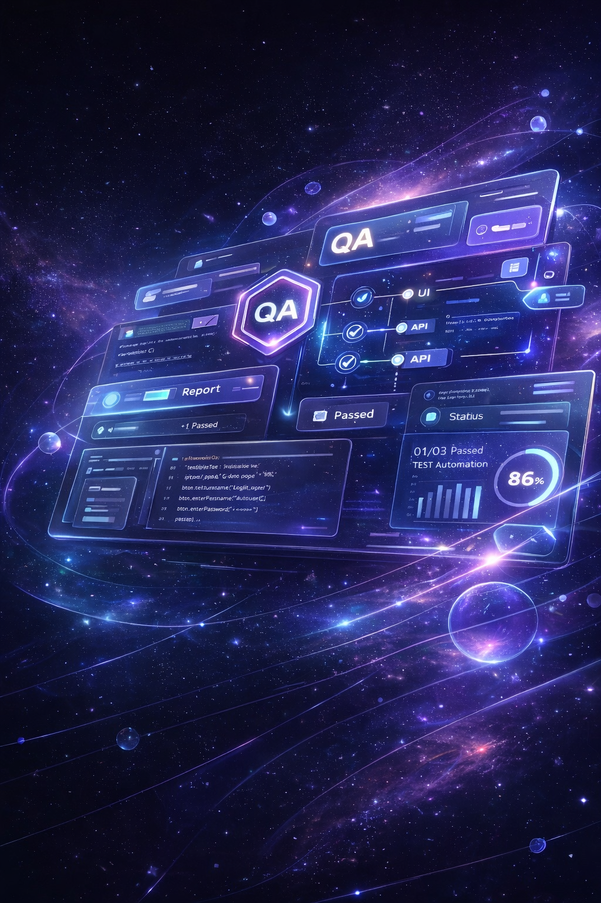

Секрет Професії
Сильний QA не просто виконує перевірки. Він бачить слабкі місця, ставить точні запитання, мислить глибше за чек-лист і вміє аргументовано пояснювати свої рішення.
Побудована так, щоб не просто дати знання, а поступово провести від нуля до рівня, на якому ти починаєш впевненіше звучати на технічних співбесідах, краще розуміти логіку QA і бачити реальні задачі значно глибше.

Ми винесли ці сенси нижче головного екрану, щоб спочатку ти бачив основний офер, а далі — глибину: професійне мислення, кар’єрний фокус і технічну базу, на якій будується впевненість у професії.
Сильний QA не просто виконує перевірки. Він бачить слабкі місця, ставить точні запитання, мислить глибше за чек-лист і вміє аргументовано пояснювати свої рішення.
Ми дивимося не лише на проходження програми, а й на те, як людина звучить на співбесідах, як розбирає сценарії та наскільки впевнено переходить до першого сильного професійного шансу.
Фундамент тестування, логіка QA, UI Automation, API Automation, практичні завдання, технічне мислення й поступове розуміння того, як виглядає реальний проєктний підхід.
У багатьох курсах дають інформацію. У Qalaxy ми збираємо систему: від фундаменту тестування й технічної логіки — до практики, мислення Automation QA Engineer і підготовки до реальних розмов з компаніями.
Кожен блок має працювати на навичку. Не просто «знати», а вміти пояснити, застосувати, перевірити, автоматизувати й захистити своє рішення.
Найцінніше в професії — не набір інструментів, а здатність бачити сценарії, формулювати ризики, ставити точні запитання й будувати якісні перевірки.
Ми дивимося не лише на процес навчання, а й на те, як людина звучить на співбесіді, як розбирає задачі та наскільки впевнено рухається до свого першого сильного кар’єрного етапу.
Програма побудована так, щоб людина не губилася в темах, а рухалася логічно: від ролі QA й фундаменту тестування — до автоматизації, технічної комунікації та впевненого кар’єрного етапу.
Роль QA, типи тестування, рівні перевірок, тестова документація, дефекти, логіка тест-дизайну, життєвий цикл бага, пріоритет, severity, test cases, checklists, bug reports.
Робота з технічним середовищем, базова логіка коду, структура автоматизації, змінні, умови, цикли, функції, робота з даними, селектори, DOM, DevTools, консоль браузера.
HTTP-методи, статус-коди, headers, body, query params, JSON, токени, авторизація, перевірка відповідей, API-логіка, тестування через Postman та підготовка до автоматизації API.
Локатори, стабільні перевірки, побудова сценаріїв, Page Object, структура тестового проєкту, читабельність автотестів, робота зі сторінками, компонентами та флоу користувача.
Як думати не окремими тестами, а системою: ризики, архітектура, якість рішень, аналіз проблем, робота з реальними кейсами, структура фреймворку, CI/CD на базовому рівні.
Робота з відповідями, записами реальних співбесід, формування технічної впевненості, підготовка до технічної розмови, розбір питань рівня Junior / Middle.
Ми не обмежуємося загальними словами про професію. Під час навчання ти познайомишся з конкретними інструментами, які реально використовуються в роботі Automation QA Engineer.
Visual Studio Code, Playwright, Node.js, npm, JavaScript / TypeScript, структура автотестів, запуск тестів, конфігурація проєкту, Page Object, assertions, waits, test reports.
Postman, Swagger / OpenAPI, JSON, HTTP-методи, статус-коди, request / response, headers, body, variables, environments, tokens, авторизація, перевірка API-відповідей.
Git, GitHub, Chrome DevTools, network, elements, console, базові SQL-запити, баг-репорти, чек-листи, тест-кейси, логіка роботи в команді, pull requests, code review basics.
Кожен тариф створений так, щоб зберегти головне: сильну базу, логіку розвитку й відчуття, що ти рухаєшся не хаотично, а за маршрутом, який має професійний сенс.
«У Qalaxy важливо не лише дати людині знання, а довести її до стану, коли вона починає звучати сильніше, мислити точніше й бачити професію глибше».
«Майже всі говорять про інструменти. Значно менше говорять про те, що компанії дуже добре відчувають, коли кандидат мислить як QA, а коли лише повторює завчені фрази».
«Сильний старт у професії починається не з обіцянок, а з правильно зібраної бази, якісної практики та середовища, де тебе ведуть до реальної готовності».
Якщо тобі важливо не просто «спробувати QA», а пройти шлях так, щоб у кінці відчувати реальну технічну опору, сильніші відповіді на співбесідах і краще розуміння професії — тоді цей формат створений саме для тебе.
Заповни форму, щоб отримати деталі щодо навчання, форматів участі та наступного набору. Далі ми зможемо зрозуміти, який маршрут підійде тобі найкраще.